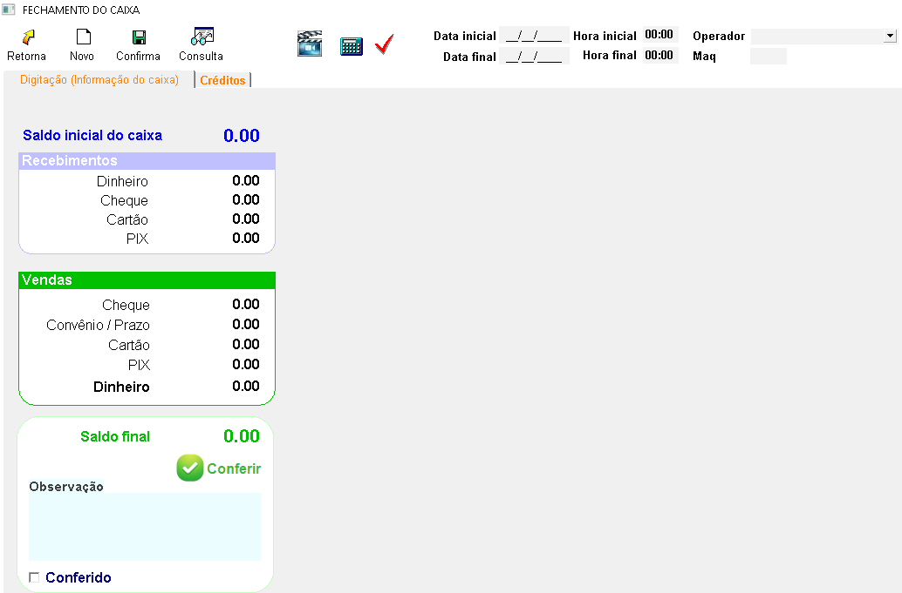
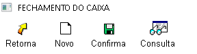
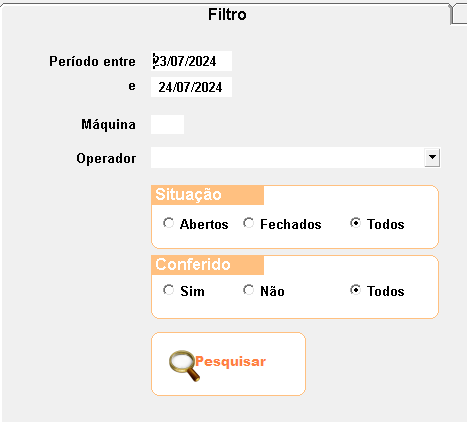
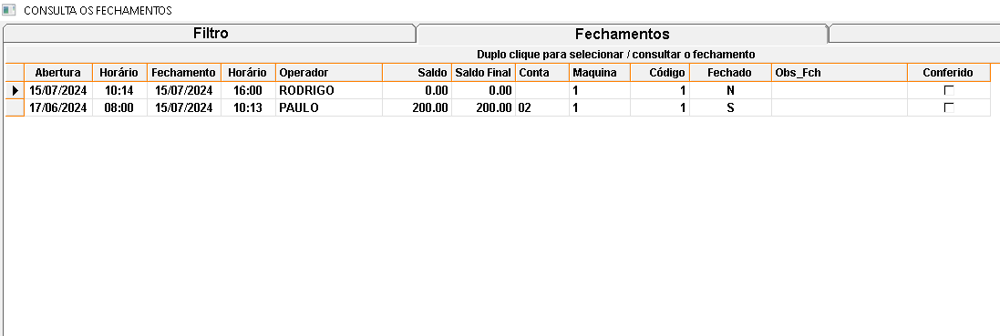
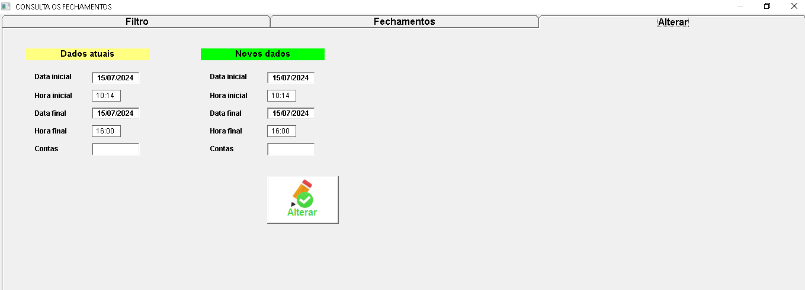
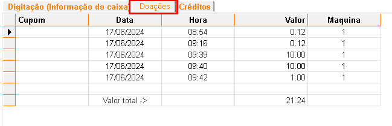
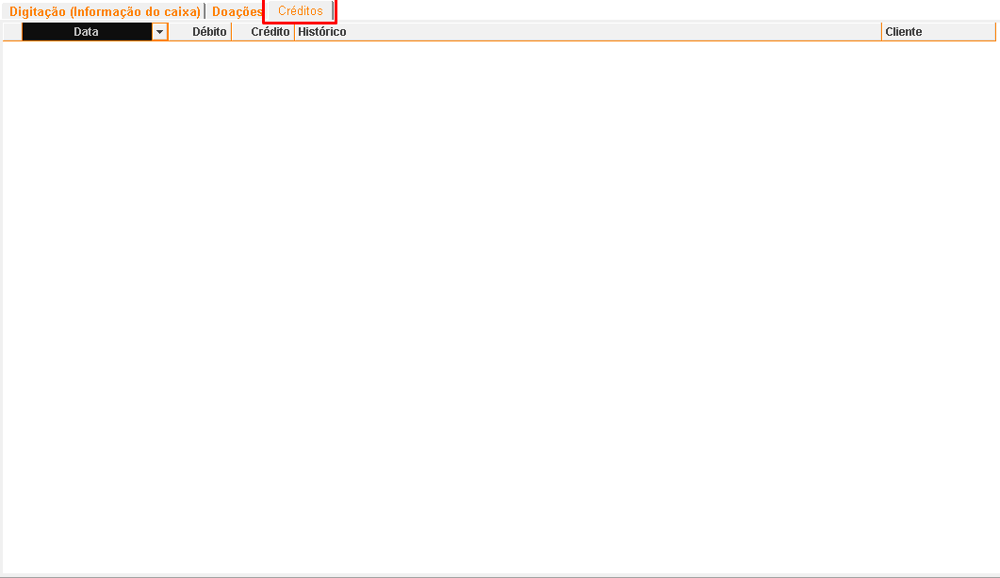

O fechamento de caixa consiste em conferir todas as entradas e saídas de valores ocorridas em um determinado período, geralmente ao final do dia ou do turno. Aperte no topico que deseja para conhecer a funcionalidade de cada opção.
É recomendado que seja feito o processo de Conferência/fechamento de caixa sempre após a finalização do caixa pelo operador responsável, informando o valor que consta no caixa.
+Digitação (informação do caixa)
Nesse tópico é apresentado o fechamento de caixa, nele é possível realizar a conferência dos valores que entraram buscando:
- Saldo inicial do caixa: irá mostrar valores predefinidos no momento da abertura do caixa.
- Recebimentos: é mostrado valores recebidos em contas abertas de clientes, lá é possível selecionar o caixa em aberto e dar a baixa do valor recebido, que posteriormente é apresentado nesta parte.
- Vendas: é apresentado apenas valores que entraram através de vendas finalizadas no emissor.
- Saldo Final: é contabilizado todos os valores que entraram no caixa.

+Na parte superior estão as opções:
- Retorna: que sai da tela de fechamento.
- Novo: abre a opção de análise de um novo fechamento.
- Confirma: finaliza e salva a operação de fechamento que estava sendo realizada.
- Consulta: irá abrir a janela de busca e análise de fechamentos.

+Consulta:
- Ao clicar em consulta será aberta a tela de filtro para procurar por opções de fechamentos:

- Após filtrar e clicar em pesquisar, será apresentado os fechamentos referente ao filtro informado.

+Alterar:
- Na opção Alterar é possível ajustar informações do fechamento caso estejam incorretas.

+Doações:
- irá apresentar valores doados na tela do emissor.

+Créditos:
Será apresentado informações detalhadas sobre os recebimentos recebidos nesse caixa.
